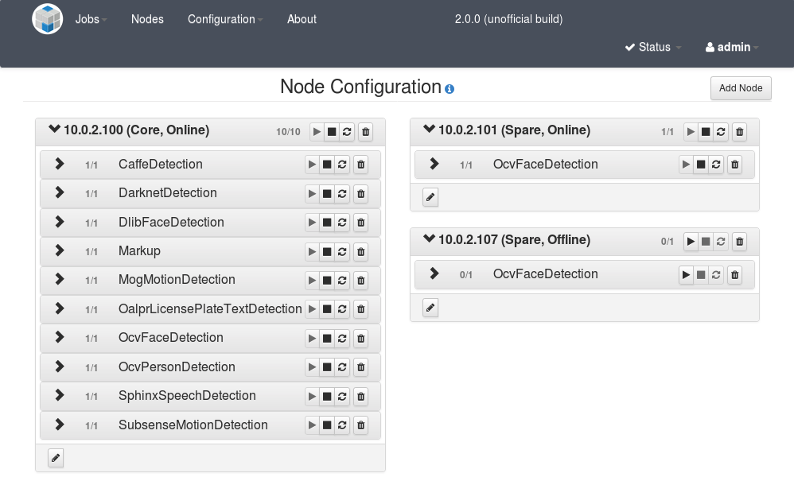

NOTICE: This software (or technical data) was produced for the U.S. Government under contract, and is subject to the Rights in Data-General Clause 52.227-14, Alt. IV (DEC 2007). Copyright 2018 The MITRE Corporation. All Rights Reserved.
Core Nodes Overview
While following the Configure the OpenMPF Cluster step in the Installation Guide, an administrator configures a master node and child nodes. A node can be a physical host machine or virtual machine (VM). Nodes configured via the deployment scripts are considered core nodes. Generally, OpenMPF expects these nodes to always be available, meaning that each one has an active instance of node-manager process running and a valid network connection so that it can communicate with the master node. Additionally, each core node must be able to access the shared storage space so that it can perform peer discovery, access media files, and generate log and output files. Core nodes are listed in the CORE_MPF_NODES environment variable in /etc/profile.d/mpf.sh.
NOTE: The master node is part of the Workflow Manager (WFM), so often the term "WFM" and "master node" are used interchangeably.
If for some reason a core node is not available while the WFM is running, then it will not be possible to run any configured services on that node. When the node becomes available and joins the OpenMPF JGroups cluster - possibly because an administrator boots it up and/or starts the node-manager process on it - then the WFM will attempt to start those configured services again.
NOTE: If a child node is not able to communicate with the WFM, then no services will run on the child node. This is because each child node receives commands from the WFM to start and stop services. The configuration for each child node is stored on the WFM host.
IMPORTANT: If a core node is not able to communicate with the WFM, then an error will occur when attempting to register new components through the Component Registration web UI.
Spare Nodes Overview
A spare node is simply a node that was not configured during the OpenMPF installation process. It is not listed in the CORE_MPF_NODES environment variable. A spare node can join and leave the network while the WFM is running. This allows OpenMPF administrators the ability to dynamically add new nodes while the WFM is running. For example, if the WFM is processing a job using the OpenCV (OCV) face detection component on a large video file, and an administrator adds a spare node to the cluster and configures it with one or more OCV Face Detection services, then those new services can immediately start processing segments of that video file. In this way, adding spare nodes on the fly can increase the computing resources available to the OpenMPF cluster.
IMPORTANT: The Component Registation web UI can only be used to register new components on, and remove existing components from, core nodes. If you register a new component and then go to the Nodes web UI, you will be able to select that component type when configuring services on a spare node; however, the service will fail to run on that node.
JGroups Communication
OpenMPF uses the JGroups toolkit for passing messages between the node-managers running on each OpenMPF node. There are two primary aspects of JGroups that an OpenMPF administrator needs to be concerned with:
-
OpenMPF uses the JGroups FILE_PING protocol for peer discovery. Each node uses files stored in
$MPF_HOME/share/nodes/MPF_Channel. A node will write a file to that directory when the node-manager starts up, and read files in that directory to determine what other nodes are in the OpenMPF cluster. -
Each OpenMPF node uses network port 7800 for JGroups TCP communication. Please ensure that this port is open in the network firewall on each OpenMPF node, or the firewall is disabled.
When a node first starts up it will be in its own JGroups cluster. Within a minute it will be merged into the cluster with the other OpenMPF nodes. At that time it will be recognized by the WFM and become available for running services and processing jobs.
Setting up a Spare Node
A spare node is defined as a node that is not configured during the OpenMPF installation process. Currently, the recommended way to create a spare node is to clone it from an existing child node. This is easy to do if your nodes are VMs. Make sure not to clone the master node because only one node in the OpenMPF cluster should be running the WFM. Instead, clone a child node. If the cluster only consists of the master node, then please follow the Configure the OpenMPF Cluster step in the Installation Guide again to add a new child node.
IMPORTANT: A spare node will only be able to run the same plugins that were installed on the child node from which it was cloned. Spare nodes are not updated as part of the OpenMPF upgrade process. We recommended discarding spare nodes with old versions of OpenMPF installed on them, and cloning new spare nodes from core child nodes that have been updated as part of the OpenMPF upgrade process.
Once you have selected a suitable child node to clone, you can perform the following steps to create a spare node. These steps assume that the child node is a VirtualBox VM. If you are using different VM software, then the cloning process will be different. These steps will have you disable DHCP and configure a static IP address on the spare node. This is not required. Alternatively, you can configure the node with a unique hostname, and add it to your domain name registry, if you would rather use DNS and DHCP. If you decide to do that, then skip to step 13 and use the node's hostname instead of IP address in the mpf.sh file.
-
Shutdown the VM you wish to clone.
-
Using the Oracle VM VirtualBox Manager UI, right-click the VM to clone from the list of VMs, and select "Clone..." from the submenu.
-
Use the dialog to give the machine a new name. Be sure to check the "Reinitialize the MAC address of all network cards" box. Then click "Continue".
-
Select "Full clone". Eventually, click the "Clone" button.
-
Start the VM, log in, and open a terminal session.
-
Run:
sudo systemctl stop node-manager -
Run:
ifconfig. Determine which network interface is used to communicate with the rest of the OpenMPF cluster. For example, the above command may print out:eth0: flags=4163<UP,BROADCAST,RUNNING,MULTICAST> mtu 1500 inet 10.0.2.100 netmask 255.255.255.0 broadcast 10.0.2.255 inet6 fe80::a00:27ff:fed2:85f5 prefixlen 64 scopeid 0x20<link> ether 08:00:27:d2:85:f5 txqueuelen 1000 (Ethernet) RX packets 1342 bytes 1304840 (1.2 MiB) RX errors 0 dropped 0 overruns 0 frame 0 TX packets 755 bytes 65290 (63.7 KiB) TX errors 0 dropped 0 overruns 0 carrier 0 collisions 0 lo: flags=73<UP,LOOPBACK,RUNNING> mtu 65536 inet 127.0.0.1 netmask 255.0.0.0 inet6 ::1 prefixlen 128 scopeid 0x10<host> loop txqueuelen 1 (Local Loopback) RX packets 680 bytes 73470 (71.7 KiB) RX errors 0 dropped 0 overruns 0 frame 0 TX packets 680 bytes 73470 (71.7 KiB) TX errors 0 dropped 0 overruns 0 carrier 0 collisions 0In this case, the interface is eth0 since lo is the loopback interface.
-
Run:
sudo gedit /etc/sysconfig/network-scripts/ifcfg-<INTERFACE>, where<INTERAFACE>is the network interface to use. In this case we useifcfg-eth0. -
In the editor, look for the line that begins with
IPADDR0=. Change the IP address after the=to a different IP address on the same subnet as the other nodes in the OpenMPF cluster. Save your changes and exit the editor.NOTE: This step is used to set a static IP address. If not already the case, change
BOOTPROTO=dhcptoBOOTPROTO=nonein this file. -
Run:
sudo systemctl restart network -
Run:
ifconfig. Verify that the IP addressed assigned to the network interface is correct. For example:eth0: flags=4163<UP,BROADCAST,RUNNING,MULTICAST> mtu 1500 inet 10.0.2.101 netmask 255.255.255.0 broadcast 10.0.2.255 ...In this case, the IPv4 address assigned to the eth0 interface is 10.0.2.101.
-
Run:
sudo gedit /etc/profile.d/mpf.sh -
In the editor, look for the line that begins with
export THIS_MPF_NODE=. Change the IP address after the=to match the IP address you selected. -
Run:
sudo reboot -
Start the VM, log in, and open a terminal session.
-
Verify that the node-manager is running:
sudo systemctl status node-manager. It should print outactive (running). For example:● node-manager.service - LSB: start and stop MPF NodeManager Loaded: loaded (/etc/rc.d/init.d/node-manager; bad; vendor preset: disabled) Active: active (running) since Tue 2018-05-22 14:29:05 EDT; 18min ago
Your spare node is now running and should be able to join the OpenMPF cluster within a minute.
Verifying that a Spare Node is Connected
Open a browser, go the Nodes web UI, and click the "Add Node" button. The spare node should appear in the list. If it doesn't, wait a minute and try again. Once it is available, you can select it from the list and configure services to run on it.
When the spare node joins you should see some activity in the WFM log. For example:
2018-05-22 15:43:31,094 INFO [jgroups-20,MPF_Channel,MasterNode:10.0.2.100:MPF-MasterNode] org.mitre.mpf.nms.ChannelReceiver - Current Participants: NodeManager:10.0.2.100:NodeManager MasterNode:10.0.2.100:MPF-MasterNode NodeManager:10.0.2.101:NodeManager
Followed by:
2018-05-22 15:43:31,095 INFO [jgroups-20,MPF_Channel,MasterNode:10.0.2.100:MPF-MasterNode] org.mitre.mpf.nms.ChannelReceiver - Cluster view accepted from NodeManager:10.0.2.101:NodeManager
The first line indicates that the cluster contains three nodes:
MasterNode:10.0.2.100:MPF-MasterNode- This is master node manager process running as part of the WFM. This is what's responsible for sending commands to start and stop services on all of the child nodes.
NodeManager:10.0.2.100:NodeManager- This is the node-manager process running on the host with the master node. This is what receives commands from the master node process to start and stop services on the machine running the WFM.
NodeManager:10.0.2.101:NodeManager- This is a node-manager process running on the child node. This also receives commands form the master node. This node just joined the network.
The second line indicates theat the master node accepted a cluster view update from the new node. In other words, the new node reported information about itself, and other nodes it knows about, to the master node.
Once the spare node joins, it will be listed when you run the mpf list-nodes command in a terminal:
Core nodes: ['10.0.2.100']
Spare nodes: ['10.0.2.101']
The screenshot belows shows an OpenMPF cluster configured with one core node and two spare nodes. One spare node is online, and one is offline. The Nodes web UI will automatically be updated when a configured node joins or leaves the OpenMPF cluster.

Moving Spare Nodes Between OpenMPF Clusters
If you have more than one OpenMPF cluster running a compatible version of OpenMPF, you can follow the above instructions, starting at step 6, to configure the spare node to run on a different cluster, with the following additions:
- In step 9, additional changes to the
ifcfg-<INTERFACE>file may be required to configure the node to connect to the proper subnet and gateway. - In step 14, you will also need to update the value of
MASTER_MPF_NODEto use the correct IP address (or hostname) of the master node in the new cluster. - You will need to remap
$MPF_HOME/shareto use the new cluster's shared network storage space.
The first cluster's WFM will remember the spare node's configuration. If and when it joins the cluster again, the WFM will send it commands to start the previously configured services. As far as the first cluster is concerned, the spare node is simply offline.